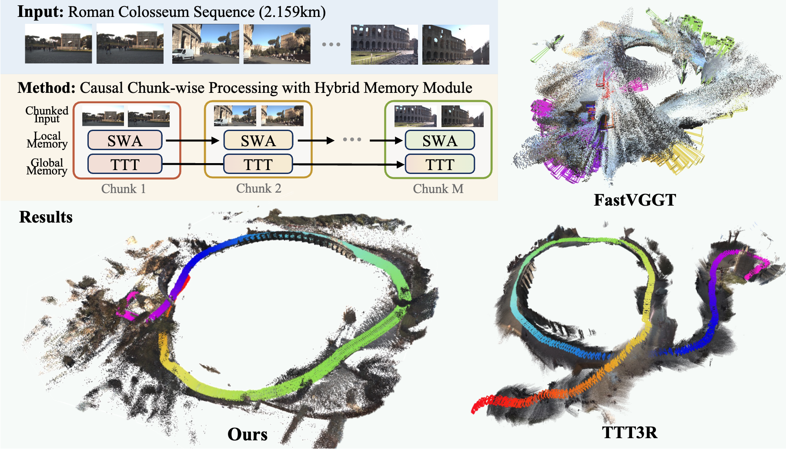

🚧Under construction
LoGeR: Long-Context Geometric Reconstruction
with Hybrid Memory
Junyi Zhang1,2,*
Charles Herrmann1,*
Junhwa Hur1,*
Chen Sun1
Ming-Hsuan Yang1
Forrester Cole1
Trevor Darrell2
Deqing Sun1,†
1 Google DeepMind
2 UC Berkeley
(*: Project leads, †: Direction lead)

LoGeR scales feedforward dense 3D reconstruction to extremely long videos. By processing video streams in chunks and bridging them with a novel hybrid memory module, LoGeR alleviates quadratic complexity bottlenecks. It combines Sliding Window Attention (SWA) for precise local alignment with Test-Time Training (TTT) for long-range global consistency, reducing drift over massive sequences up to 19,000 frames without any post-hoc optimization.
[Paper]
[Arxiv (soon)]
[Code (soon)]
[BibTeX]
Visual Results
Scaling to unprecedented horizons. Even without backend optimization, LoGeR maintains strong geometric coherence and reduces scale drift over kilometer-scale trajectories.

Qualitative results on expansive in-the-wild and VBR sequences. Our fully feedforward approach accurately preserves large-scale structures and loop closures over thousands of frames.
Why Is Long-Context Geometry Hard?
Long-context reconstruction is limited by two complementary bottlenecks: a context wall in model scaling and a data wall in generalization.
Context Wall
Context Wall: Full bidirectional attention is powerful but quadratically expensive, while linear-memory recurrent models excessively compress data, losing local geometric details.

LoGeR bypasses this trade-off. Our hybrid architecture maintains sub-quadratic linear scaling while preserving high-fidelity local geometry (via SWA) and ensuring global structural anchoring (via TTT).
Data Wall
Data Wall: Simply engineering efficient attention (e.g., FastVGGT) isn't enough. Models trained solely on short-context "bubbles" inevitably fail to generalize to expansive, large-scale scenes.

While efficient variants like FastVGGT alleviate memory bottlenecks, they still collapse on large-scale VBR trajectories. LoGeR successfully breaches the data wall by pairing its hybrid memory with a diverse, long-horizon training curriculum.
How LoGeR Works
LoGeR processes video streams chunk by chunk, retaining the high-fidelity reasoning of bidirectional attention locally, while deploying two specialized pathways to bridge the chunk boundaries.
Chunk-wise process + hybrid memory
1. Chunk-Wise Processing
Keep local inference windows in-distribution and computationally bounded.
2. Bidirectional Backbone
Retain expressive multi-frame geometric reasoning within each chunk.
3. SWA for Local Alignment
Pass uncompressed, short-range features to seamlessly align adjacent chunks.
4. TTT for Global Memory
Continually update a compressed global state to prevent scale drift over long horizons.
Results on Long Sequences
Strong performance on long horizons. On standard KITTI benchmarks, LoGeR reduces the average ATE to 18.65. On the 19k-frame VBR dataset, it delivers a 30.8% relative improvement over prior feedforward approaches.

KITTI. Both Pi3-Chunk and LoGeR strongly outperform prior feedforward baselines, and LoGeR* achieves the best average ATE at 18.65.

VBR quantitative. On extremely long Rome trajectories, LoGeR increasingly pulls away as sequence length grows. We attribute this to TTT anchoring global scale, while simple chunk stitching accumulates scale errors over distance.

Qualitative camera trajectories on the VBR dataset. LoGeR accurately preserves global scale and trajectory over very long sequences, closely matching ground truth where prior methods suffer from severe drift.
Results on Short Sequences
LoGeR also remains highly competitive on short-sequence benchmarks, delivering strong reconstruction and pose accuracy while preserving the long-horizon robustness that defines our approach.

7-Scenes reconstruction. Protocol: TTT3R. On short-sequence 3D reconstruction, LoGeR and the Pi3-Chunk baseline both outperform prior work, with LoGeR showing a 69.2% relative gain in our evaluation.

7-Scenes reconstruction. Protocol: VGG-T3. When uniformly sampling 100, 500, and 1k frames, LoGeR still achieves substantial improvements, including 90.3% and 72.1% error reduction at 1k frames against TTT3R and VGG-T3, respectively.

Pose evaluation. Protocol: TTT3R. On ScanNet and TUM-Dynamics, LoGeR substantially outperforms prior work, with 80.0% and 66.1% relative gains in our evaluation.
BibTex
@article{zhang2026loger,
title={LoGeR: Long-Context Geometric Reconstruction with Hybrid Memory},
author={Zhang, Junyi and Herrmann, Charles and Hur, Junhwa and Sun, Chen and Yang, Ming-Hsuan and Cole, Forrester and Darrell, Trevor and Sun, Deqing},
journal={arXiv preprint},
year={2026}
}
Acknowledgements:
We borrow this webpage template from SD+DINO, which is originally adapted from DreamBooth.